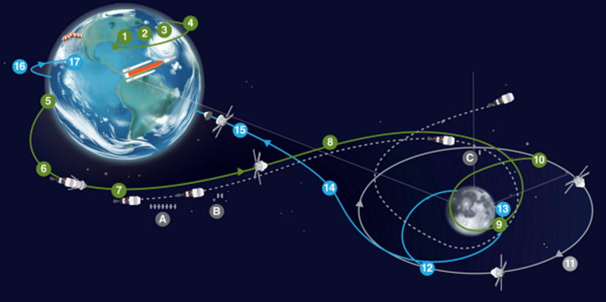

Artémis un la première étape du retour sur la lune cette phase de la mission et aujourd'hui fini. Le principal objectif de cette mission de tester le SLS dans des conditions lunaires. Ce vol n’embarque donc aucun astronaute puisque la capsule Orion a été testé sur terre et en orbite terrestre mais pas en orbite lunaire. Il existe par ailleurs d'autres objectifs.
- Tester la capacité du bouclier thermique du capsule Orion qui lors de la rentrée atmosprique (retour sur terre) on doit être capable de subir une température d'environ 2800 °C. Cette température est obtenue par suite du frottement la vitesse d'entrée dans l'atmosphère terrestre de 11 km secondes
- Vérifier que l'ensemble du déroulement de la mission peut se faire sans accroc c'est à dire du compte à rebours à la récupération de la capsule Orion
- La récupération de la capsule Orient et aussi une face clé et 8 malgré les entraînements fournis il est important d'être testé en conditions réelles
- Il existe d'autres objectifs secondaires comme le déploiement de satellite qui se placeront sur l'orbite lunaire
Cette mission aussi servi à approuver les modification cas subie le pas de tir 39B celui-ci et aujourd'hui le seul pouvant accueillir le SLS puisque des modifications et des rénovations ont été faites spécialement dans le cadre du programme Artémis on peut retrouver le bâtiment d'assemblage VAB(Vehicle Assembly Building) le pas de tir encore la plateforme mobile qui permet de déplacer la fusée du VAB au pas de tir au centre spatial Kennedy.
Le décollage du SLS s’ouvre à de multiple fenêtre de lancement cependant celui-ci va être de nombreuses fois reporter :
- Lancement du 29 août doit être annulée pour un problème de température au niveau d'un moteur dans l'origine peut être celle du capteur
- Une nouvelle tentative est alors faite le 3 septembre un échec de nouveau à cause d'une fuite Diderot gène de la fusée au niveau d'un joint de système de connexion qui alimentait le réservoir. Le décollage est alors repoussé au 17 septembre puisque de nombreuses modifications sont à faire. Après des tests concluants une fenêtre de lancement s'ouvre enfin aux membres de la Nasa le 27 septembre cependant l'ouragan Nicole passe sur la Floride au même moment ce qui pousse la Nasa à ramener la fusée dans le bâtiment l'assemblage afin de ne pas créer de dégâts.
- C’est finalement le 16 novembre que le SLS décollera pour la première fois sans accroc
L’ensemble de la mission se déroule sans problème les satellites sont envoyés la capsule Orion fais son retour sur terre le 11 décembre 2022 à 17h40 UTC.
Artémis un est donc une réussite dans le lancement du programme Artémis qui se voit chargé de la lourde responsabilité du retour de l'humanité sur la lune
